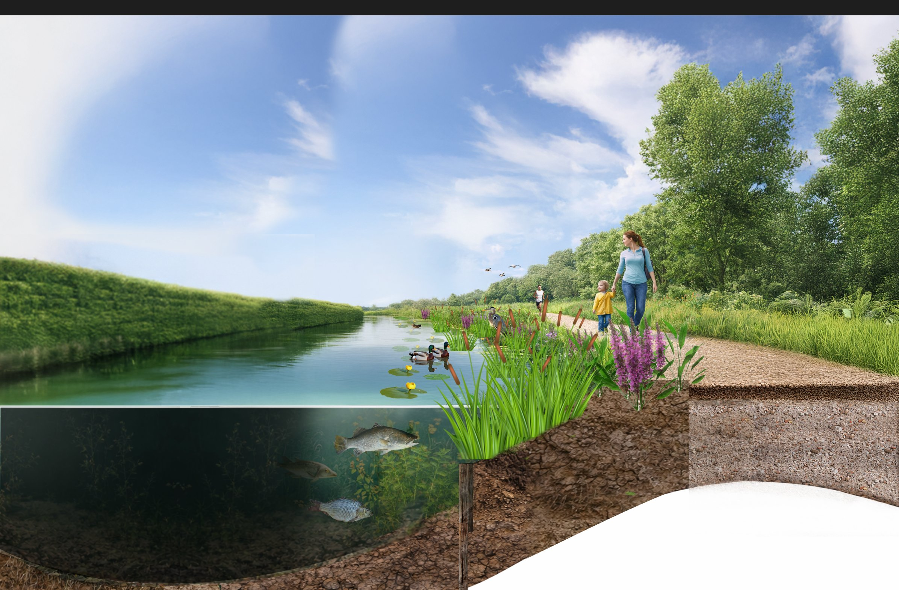

3D-inrichtingsvisualisatie voor Gemeente IJsselstein & Landus — één beeld dat ecosysteem én gebruiker verenigt, van waterleven tot wandelpad.

De Kromme IJssel krijgt een nieuwe inrichting. Maar hoe overtuig je burgers, raadsleden en partners dat de plannen echt iets gaan toevoegen? Een technische tekening toont wat er komt. Dit beeld laat zien hoe het voelt.
Een cross-section die boven en onder water tegelijk laat zien. Boven: moeder met kind, wandelaar, zomerlicht, vogels. Onder: vissen, waterplanten, het verborgen ecosysteem dat pas door deze inrichting tot leven komt.
Dezelfde techniek die ingenieurs gebruiken om complexe systemen uit te leggen — maar dan toegankelijk, warm en leesbaar voor burgers die geen tekening kunnen lezen.
Eén beeld dat in elk overleg werkte — raadszaal, buurtbijeenkomst, partnergesprek. Complex beleid, in één oogopslag begrijpelijk.